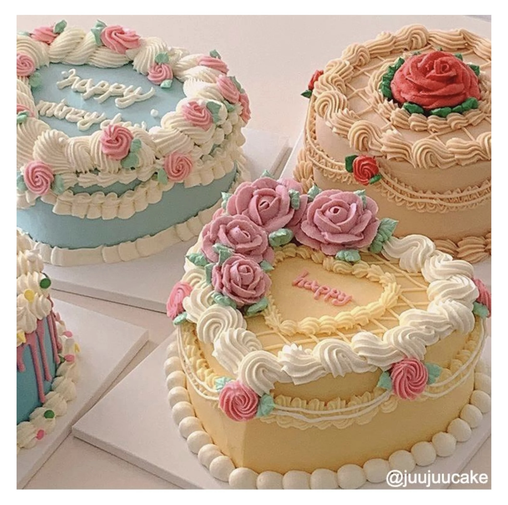
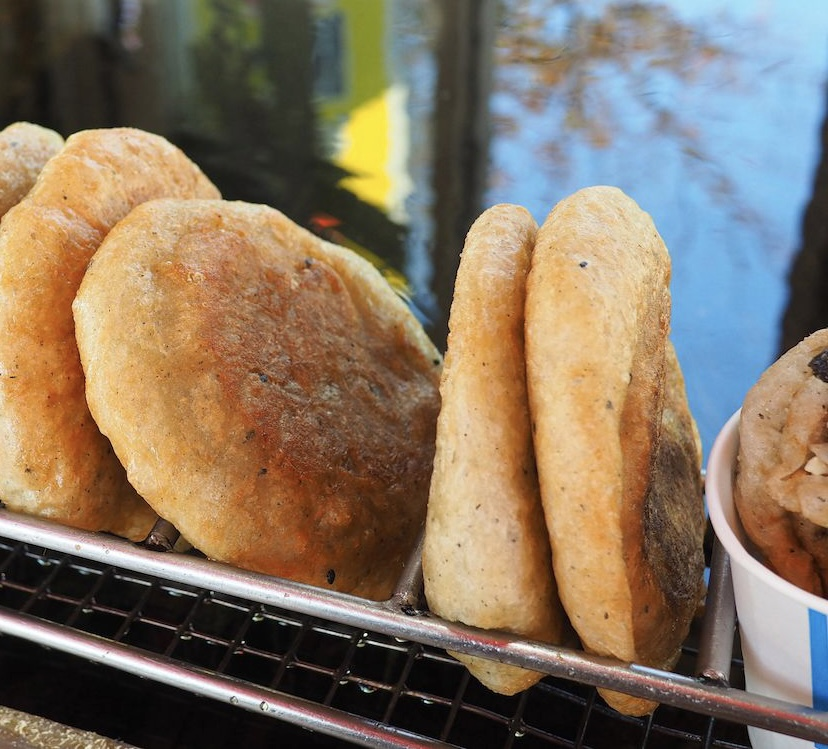
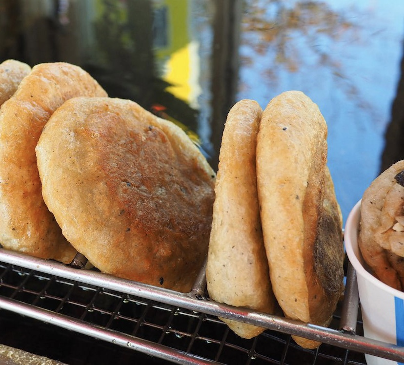
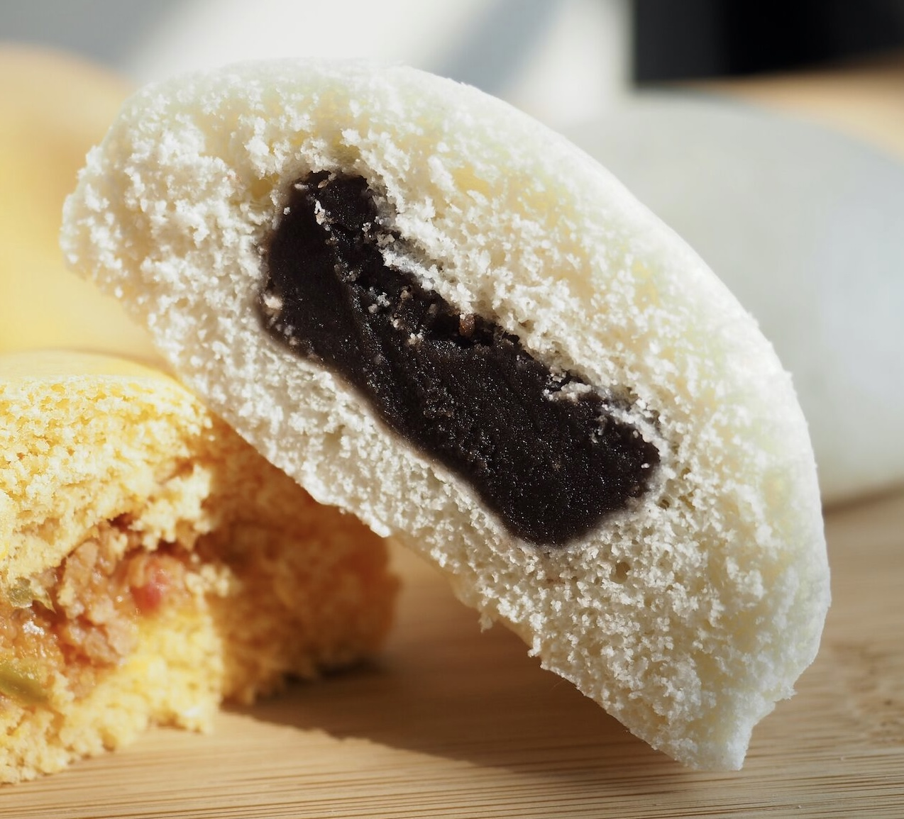
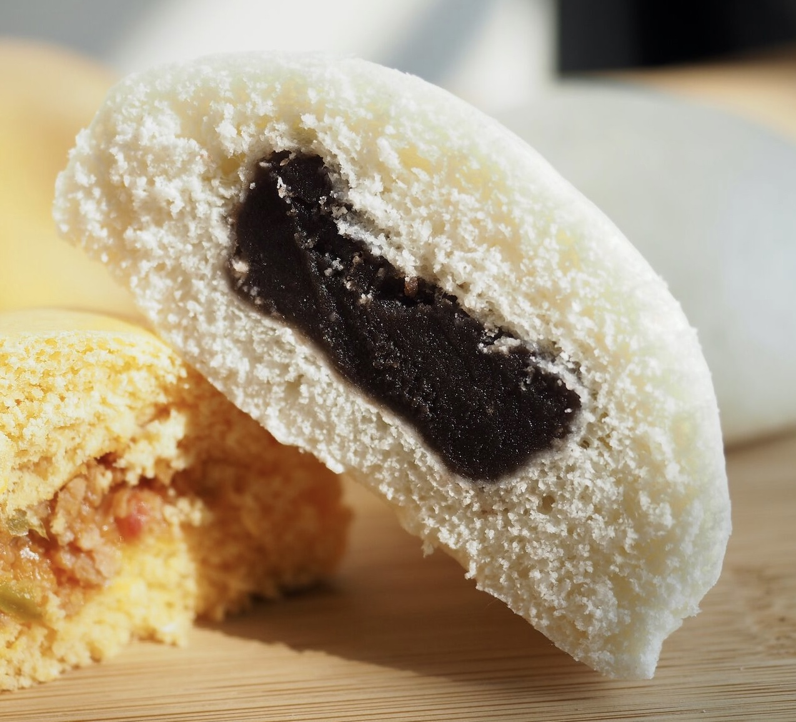

We provide approximately 2,000 cakes daily to restaurants and large retailers
Service and flavour received 99% positive feedback
K-trend Cakes
Vintage Cakes
from £72.95
Retro Cakes

from £62.70
Christmas Cakes
from £82.99
HPBD Cakes
from £56.82
our story
The term "Party Bakeries" can be traced back to culinary festivals
that celebrated cakes in the middle of Seoul. These festivals gave
rise to the concept. We intend to bring about and alter changes in
the way that people eat, drink, and unwind in their free time. We
quickly expanded and established a presence in some of the most
important nations in the world after the success of a series of
traditional and modern cakes in Korea, such as Maejakgwa, Jeung-
pyeon,and Hobaktteok. Other countries where we have a presence
includes Poland, Sweden, Switzerland, Germany, and other countries.
We create the ideal combination of scrumptiousness and sweetness
of Korean culture while keeping concept of local regeneration in mind
After opening our first store in Seoul more than twenty years ago
we are making preparations for the opening of our 26th store and are
working on additional exciting plans at the same time. Let's go to
"Party Bakeries" and enjoy some of their delicious baked goods. We
guarantee that you will not be dissatisfied in any way.
Korean Tradional Cakes
Gyeongdan (경단)
The Korean rice cake, or gyeongdan (경단), is a type of tteok (rice cake) made from
glutinous rice or other types of glutinous rice flour. This traditional cake is called
gyeongdan and has the shape of a jade. Union members should be utilised frequently during the
holidays. The colour and flavour of the cake vary depending on the dough's coating.
(£54.35)
Dasik (다식), the "tea food," is a bite-sized hangwa that is typically served alongside tea.
It is produced by kneading grain, other edible seed flour, or pollen with honey and then pressing the mixture into a decorative dasikpan (다식판) mould. These traditional tea cookies are composed
primarily of sesame seeds, rice flour, or soy flour.
(£46.70)
The name songpyeon derives from the use of pine needles; "song" refers to the pine
tree, so songpyeon literally means "pine cakes." It is a type of rice cake made with a
semi-sweet filling, and its shape resembles that of a half moon. The fillings of 송편 can
typically range from sesame seeds and honey to chestnuts and mung beans.
(£39.99)
Bukkumi (부꾸미) is a tteok (rice cake) made with glutinous rice flour or sorghum flour
that is pan-fried. It is a cake in the shape of a flat half-moon filled with white adzuki
bean paste or a mixture of toasted and ground sesame seeds, cinnamon powder, sugar,
or honey. The hues range from white to yellow, pink, and dark green.
(£42.62)

 



 
